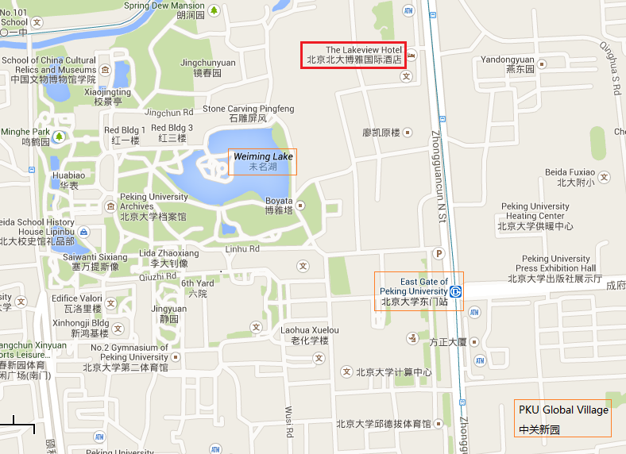

|
 |
 |
|---|---|---|
Home | Schedule | Invited Speaker Bios | Venue/Hotel Direction | ISHCS 2013 | ISHCS 2012 | ISHCS 2011 |
||
4th International Symposium on High Confidence Software (ISHCS 2015)January 15, 2015, The Lakeview Hotel, Beijing, ChinaHost: Institute
of Software and Key
Laboratory of High Confidence Software Technologies,
Ministry of Education, Peking University |
The symposium will be hosted at 北大博雅国际酒店.
Here is the map image of the hotel's location:

Here is the Baidu Map.
Here is the Bing map direction.
Note that due to space limit, the symposium is open for participation registration by only those who receive invitation emails to register.
If you haven't received an invitation email to register but have interest to attend the symposium, please send an email to the symposium organizers to check space availability.